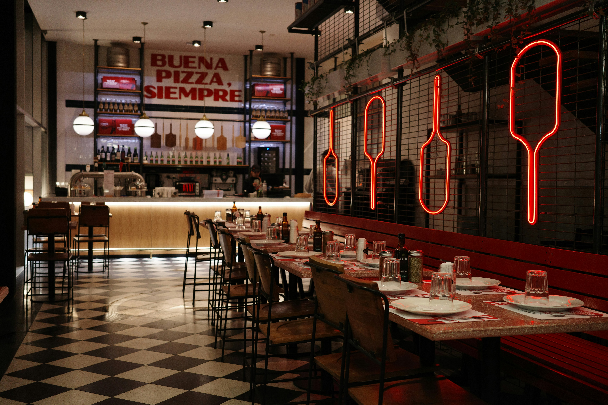
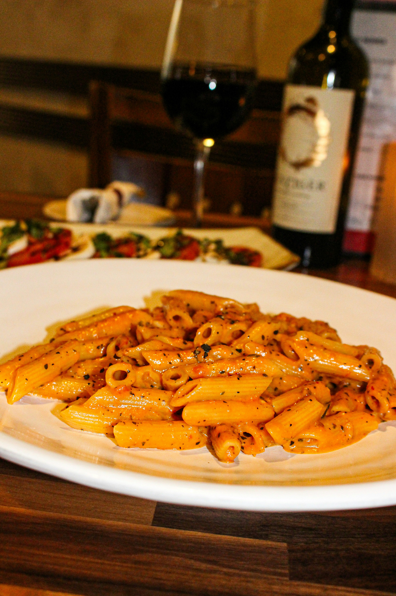
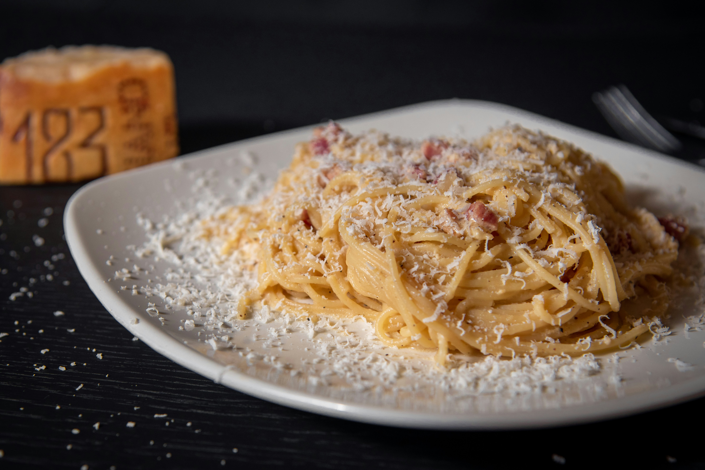

Margherita
Tomato, mozzarella, fresh basil, and olive oil.
ITALIAN PIZZA • PASTA • GOOD TIMES
Fresh pizza, handmade pasta, and familiar favorites made for sharing. Luigi's is your neighborhood spot for an easy dinner, a long table, and something good to eat.
View the Menu →
OUR STORY
Luigi's is your local spot for good pizza, fresh pasta, and meals worth sharing. Come by for dinner, grab a slice, or stay awhile.
Come say hello →WHAT'S GOOD
Tomato, mozzarella, fresh basil, and olive oil.

Spaghetti tossed with rich tomato and herb sauce.

Fresh fettuccine with a creamy Parmesan sauce.
YOUR TABLE IS WAITING
Good food. Good people. Your neighborhood table.
Explore the Menu →